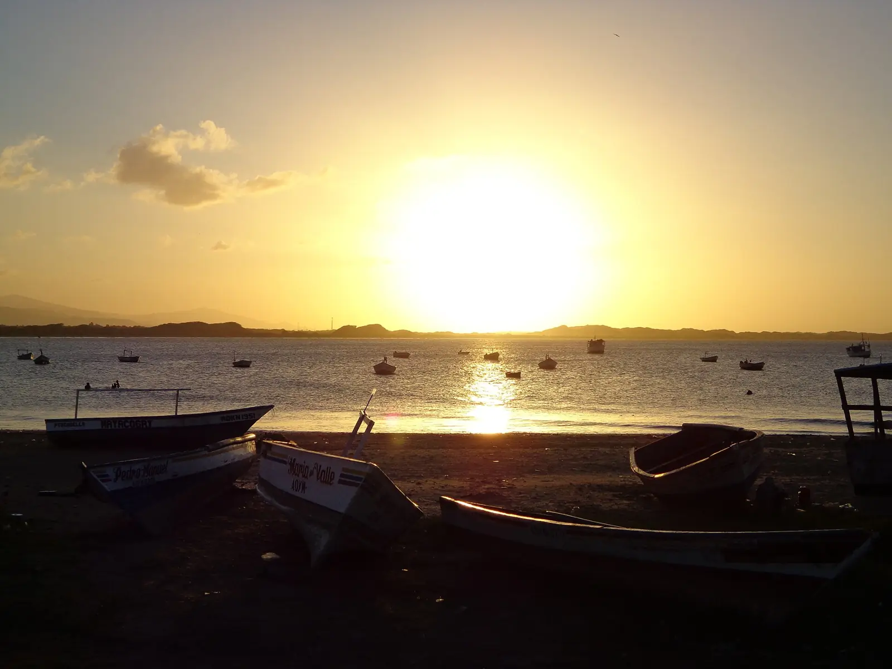
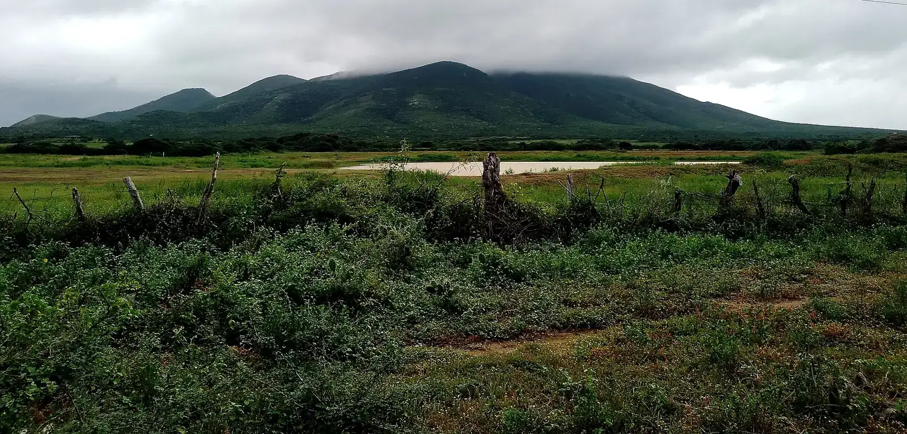

A pocas cuadras, a pie
Zona colonial
Patrimonio de la Humanidad desde 1993: calles de piedra, portadas blancas y casas pintadas de amarillo y rojo.
Desde la calle San Juan Bosco, lo primero se hace a pie. Las distancias son aproximadas, tomadas desde el centro.
A pocas cuadras, a pie
Patrimonio de la Humanidad desde 1993: calles de piedra, portadas blancas y casas pintadas de amarillo y rojo.

Unos 10 minutos en carro
Dunas de arena a la salida de la ciudad, en parque nacional. Vaya temprano o al caer la tarde, cuando el sol da tregua.

Unos 12 km, 20 minutos en carro
El puerto histórico de Coro, con su paseo frente al mar y un atardecer que vale el viaje.

Unos 90 km hasta Punto Fijo, 1 h 15 min en carro
Coro es la salida natural hacia la península: se cruza el istmo de los Médanos y se llega a sus playas y al Cerro Santa Ana.
¿Quiere organizar sus días en Coro? Escríbanos y le decimos por dónde arrancar.
Preguntar por WhatsApp